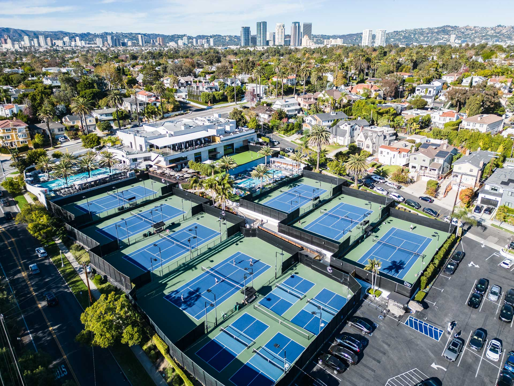
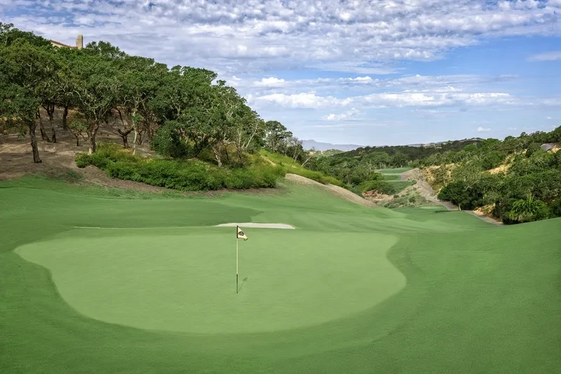

Sam Reyes
UCLA Class of 2026
International Development Studies·Statistics & Data Science
01About
About me
I'm a senior at UCLA studying International Development Studies alongside Statistics and Data Science, graduating this December. That combination shapes how I work: I care about the human question behind a dataset as much as the model itself, and I'm comfortable moving between fieldwork (interviews, site visits, qualitative synthesis) and formal statistical analysis, from regression modeling to designing a randomized experiment.
I'm looking for internships or grad programs where that range is useful: somewhere I can ask a clear question, work through the data honestly, and explain what it means to people who have to make a decision.
02Selected projects
My work.
A regression study, a randomized experiment, and a field research paper. Click into any of them for the full write-up.
Predicting NBA Scoring
Multiple regression on 12,844 player-seasons to find what actually explains scoring output.
View full case study →Music & Concentration
A block-randomized experiment testing whether music changes short-term attention.
View full case study →Sustainability at a Private Golf Club
Interviews and literature synthesis testing a club's environmental claims against its practices.
View full case study →03Experience & leadership
Where I've spent my time.

Pool Server, Griffin Club Los Angeles
Deliver poolside food and beverage service at Griffin Club, the newest addition to the Bay Club family, carrying the member-first standard I built over two years at Stonetree into a fast-paced, guest-facing role at one of the brand's flagship properties.
UCLA Club Golf: Executive Board
Plan and run team social events and practices twice a week; contribute to team operating decisions for one of UCLA's largest club sports.

Golf Services Attendant, Bay Club Stonetree
Ran daily golf operations for members and guests, coordinating tee-time scheduling and cart fleet logistics through peak hours, and independently led a children's summer golf camp, introducing the next generation of members to the game.
Skills
Languages & tools
- R
- ggplot2
- Spreadsheets & structured data collection
Methods
- Multiple regression
- Hypothesis testing
- Experimental & block design
- Model diagnostics
Research & communication
- Interview-based fieldwork
- Literature synthesis
- Technical writing
Spoken languages
- English
- French
Hospitality & service
- Member & guest relations
- Hospitality service standards
- Conflict resolution
- Event coordination
04Contact